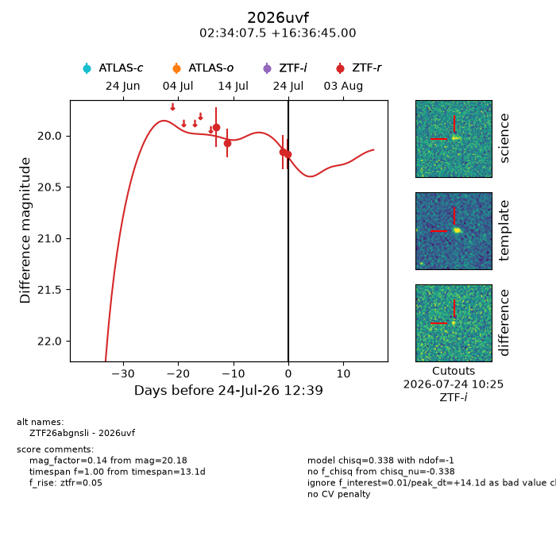
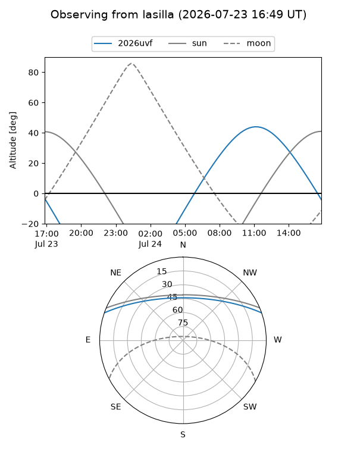
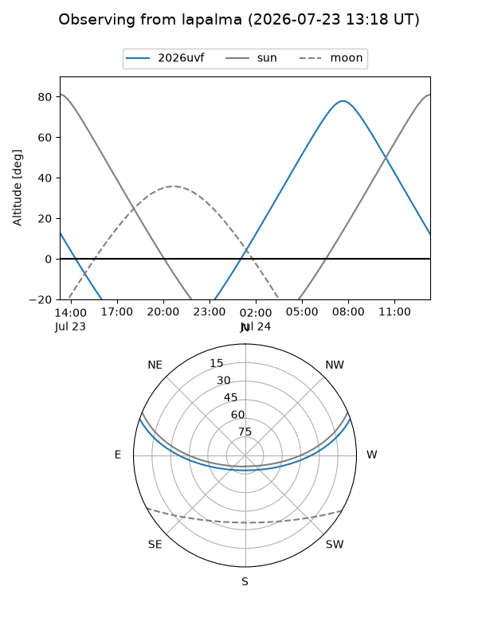
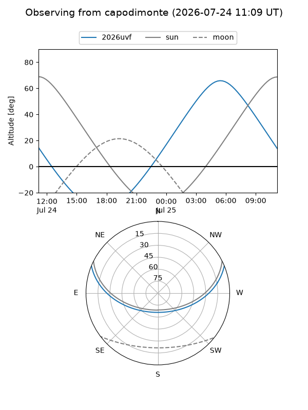
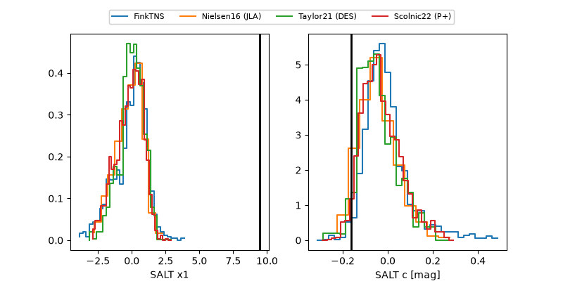

2026uvf
Target 2026uvf at 2026-07-24 12:41
Aliases and brokers:
FINK-ZTF: ztf.fink-portal.org/ZTF26abgnsli
Lasair-ZTF: lasair-ztf.lsst.ac.uk/objects/ZTF26abgnsli
ALeRCE-ZTF: alerce.online/object/ZTF26abgnsli
YSE-PZ: ziggy.ucolick.org/yse/transient_detail/2026uvf
TNS name: wis-tns.org/object/2026uvf
Direct TNS query: direct search
alt names
ZTF26abgnsli (ztf,fink_ztf)
2026uvf (tns,yse)
Coordinates:
equatorial (ra, dec) = 38.5311,+16.61250
equatorial (HMS+DMS) = 02:34:07.47,+16:36:45.00
galactic (l, b) = (155.5663,-39.66465)
Flags:
TNS type: nan
peak dt: +14.1
Photometry:
last ztfr=20.18
4 ztfr detections
Lightcurve

Visibility



Additional plots
